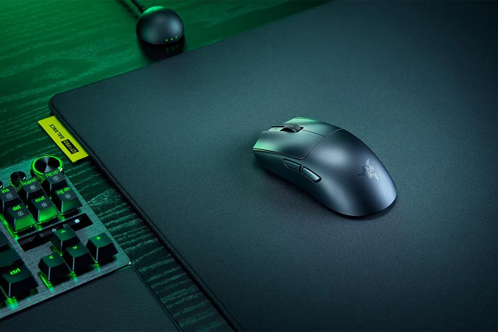

← All Guides
Best Lightweight FPS Gaming Mouse 2026: What 4 Real Reviewers Agree On
Aggregated from 4 YouTube reviews · Updated 2026-10-03

Razer Viper V4 Pro
Backed by 2 of 4 sources: BadSeed Tech picked it over the Logitech Superstrike in a direct head-to-head, and Digital Foundry calls it the apex of ultra-light gaming mice
📊 Quick Comparison
| # | Product | Recommended By | Best For | Price |
|---|
| 1 | Razer Viper V4 Pro | 2/4 reviewers | Competitive FPS and esports | $159-$180 |
| 2 | Logitech G Pro X2 Superstrike | 1/4 reviewers | Cutting-edge click tech for tactical shooters | $179.99 |
| 3 | Logitech G Pro X Superlight 2 | 1/4 reviewers | Safe esports all-rounder | $129-$159 |
| 4 | Razer DeathAdder V4 Pro | 1/4 reviewers | Ergonomic FPS gaming | $150-$170 |
💬 Reviewer Consensus
Common Pros
- Razer Viper V4 Pro: BadSeed Tech's head-to-head winner and Digital Foundry's apex pick - 49g flagship with the 50K sensor (2/4 mention)
- Logitech G Pro X2 Superstrike: the only mouse with tunable haptic actuation, a real click-latency edge for tactical shooters (1/4 mention)
- Logitech G Pro X Superlight 2: TechPowerUp lab testing found near-perfect sensor accuracy - the safe esports shape, now cheaper (1/4 mention)
- Razer DeathAdder V4 Pro: the ergonomic FPS option with 8K wireless and 150-hour battery (1/4 mention)
Common Cons
- Flagship pricing: the Viper V4 Pro and Superstrike sit at $160-$180 (2/4 mention)
- Viper V4 Pro: no RGB, loud clicks, and the symmetrical shape doesn't suit every palm gripper (1/4 mention)
- Superstrike: haptic clicks divide opinion and at 61g it is heavier than the Viper (1/4 mention)
🔍 Detailed Breakdown
Razer Viper V4 Pro
🛒 Amazon🛒 TemuBadSeed Tech's head-to-head winner over the Logitech Superstrike and Digital Foundry's apex of ultra-light gaming mice: a 49g flagship with Frame Sync sensor technology.
Battery life: ~180 hours at 1,000 Hz
Polling rate: Up to 8,000 Hz wireless
Sensor: Focus Pro 50K Gen-3 (50,000 DPI)
Weight: 49 g
Best for: Competitive FPS and esports · $159-$180
Logitech G Pro X2 Superstrike
🛒 Amazon🛒 TemuThe only mouse with tunable haptic actuation switches: dial in click force like DPI. BadSeed Tech found the Superstrike's click tech genuinely compelling in direct testing against the Viper V4 Pro.
Battery life: ~60-90 hours
Polling rate: Up to 8,000 Hz wireless
Sensor: HERO 2 (44,000 DPI)
Weight: 61 g
Best for: Cutting-edge click tech for tactical shooters · $179.99
Logitech G Pro X Superlight 2
🛒 Amazon🛒 TemuTechPowerUp's lab testing found near-perfect CPI accuracy with no smoothing across the full range. The reference safe esports shape, now discounted below the 2026 flagships.
Battery life: ~95 hours
Polling rate: Up to 8,000 Hz wireless
Sensor: HERO 2 (44,000 DPI)
Weight: 60 g
Best for: Safe esports all-rounder · $129-$159
Razer DeathAdder V4 Pro
🛒 Amazon🛒 TemuPCGamesN calls it the new ergonomic gaming mouse king: the beloved DeathAdder shape at 56g with true 8K wireless for palm-grip FPS players.
Battery life: ~150 hours at 1,000 Hz
Polling rate: Up to 8,000 Hz wireless
Sensor: Focus Pro 45K Gen-2
Weight: 56 g
Best for: Ergonomic FPS gaming · $150-$170
❓ Frequently Asked Questions
Why is the Razer Viper V4 Pro our top pick?
It's recommended by multiple reviewers for its overall balance of performance, features, and value. See the detailed breakdown above.
📺 Video Sources
Show 4 review videos
📺
BadSeed Tech — Logitech Superstrike VS Razer Viper V4 Pro (NOT What I Expected)
Watch Video📺
Digital Foundry — Review: Razer Viper V4 Pro: The Apex of Ultra-Light Gaming Mice
Watch Video📺
TechPowerUp — Logitech G Pro X Superlight 2 Review - Updated with 8000 Hz Tested
Watch Video📺
PCGamesN — Razer Deathadder V4 Pro review - the new ergonomic gaming mouse king
Watch Video